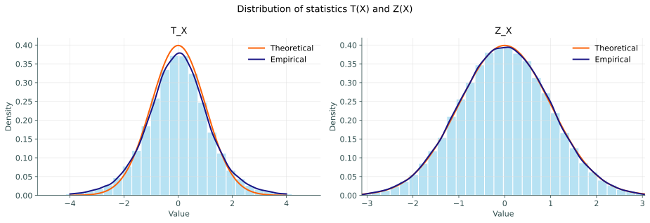
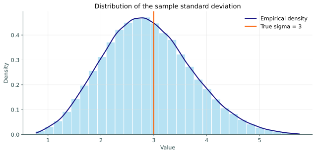
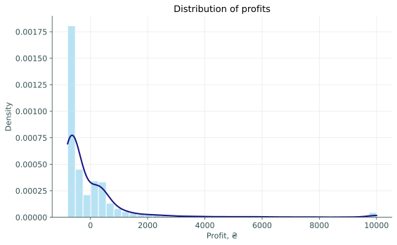
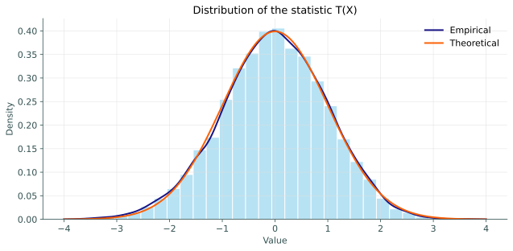
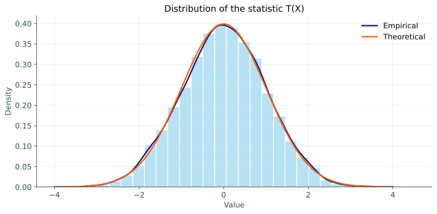
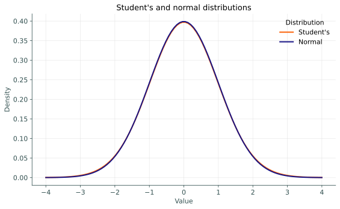
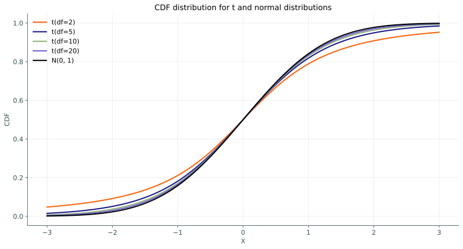
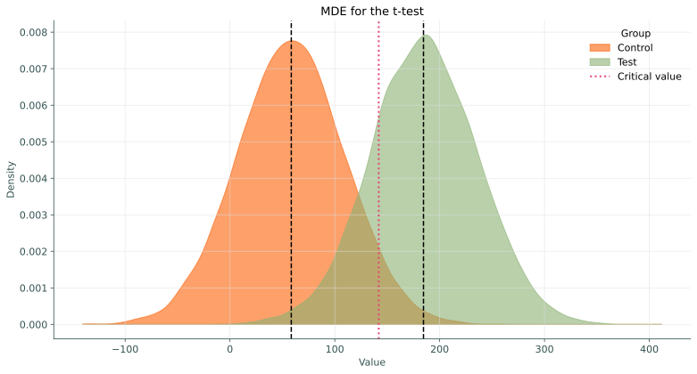

X = np.array([6.9, 6.45, 6.32, 6.88, 6.09, 7.13, 6.76])
print(f"Average time of loading into the DBMS: {X.mean():.2f} hours")Average time of loading into the DBMS: 6.65 hoursApplied Statistics
Kyiv School of Economics
Our company wants to switch from one DBMS to another. The main criterion for the transition is “the time spent per day loading new data.” If previously it took an average of 10 hours to update the database on a daily basis, we want to find a new DBMS that will do it faster than 7 hours.
To do this, we decided to transfer all the data to the new database under test. During one week, we will calculate the data loading time every day, and if the average time for updating is less than 7 hours, then we will completely switch to the new DBMS. Your task is to come up with a way to test the hypothesis that the new DBMS is better than the old one.
The sample is:
[6.9, 6.45, 6.32, 6.88, 6.09, 7.13, 6.76] — the time to load into the new database by day in hours.Average time of loading into the DBMS: 6.65 hoursThen you just need to calculate the following statistics: \[\sqrt{n}\dfrac{\overline X - 7}{\sqrt{\sigma^2}} \overset{H_0}{\sim} \mathcal{N}(0, 1)\]
Important
But there’s one problem: we don’t know \(\sigma^2\)!
\(\widehat{\sigma^2} =S^2 = \dfrac{1}{n - 1}\underset{i=1}{\overset{n}{\sum}}(X_i - \overline X)^2\)
Let’s introduce a new criterion, the \(t\)-test, in which we substitute:
It remains to be seen: Is it true that at \(H_0\) the distribution of the statistic T is standard normal?
np.random.seed(42)
M = 100_000
sample_size = 7
# T(X): variance estimated from the sample (S^2)
samples_T = stats.norm.rvs(loc=5, scale=3, size=(M, sample_size))
T_X = np.sqrt(sample_size) * (samples_T.mean(axis=1) - 5) / samples_T.std(axis=1, ddof=1)
# Z(X): true variance (sigma = 3) is known
samples_Z = stats.norm.rvs(loc=5, scale=3, size=(M, sample_size))
Z_X = np.sqrt(sample_size) * (samples_Z.mean(axis=1) - 5) / 3
plot_data = pd.DataFrame({
"Statistic": np.repeat(["T_X", "Z_X"], M),
"Value": np.concatenate([T_X, Z_X]),
})
plot_data| Statistic | Value | |
|---|---|---|
| 0 | T_X | 1.748327 |
| 1 | T_X | -0.742777 |
| 2 | T_X | -1.318122 |
| 3 | T_X | -1.559567 |
| 4 | T_X | 0.041304 |
| ... | ... | ... |
| 199995 | Z_X | 0.155388 |
| 199996 | Z_X | 0.853186 |
| 199997 | Z_X | -1.659037 |
| 199998 | Z_X | 0.085819 |
| 199999 | Z_X | 0.990811 |
200000 rows × 2 columns
x = np.linspace(-4, 4, 1000)
normal_pdf = stats.norm.pdf(x, loc=0, scale=1)
fig, axes = plt.subplots(1, 2, figsize=(13, 4.5))
for ax, name in zip(axes, ["T_X", "Z_X"]):
values = plot_data.loc[plot_data["Statistic"] == name, "Value"].to_numpy()
lo, hi = np.quantile(values, [0.001, 0.999])
clipped = values[(values >= lo) & (values <= hi)]
kde = stats.gaussian_kde(clipped)
ax.hist(clipped, bins=30, density=True, color="skyblue", alpha=0.6,
edgecolor="white")
ax.plot(x, normal_pdf, color=red, lw=2, label="Theoretical")
ax.plot(x, kde(x), color=blue, lw=2, label="Empirical")
ax.set_title(name)
ax.set_xlabel("Value")
ax.set_ylabel("Density")
ax.set_xlim(lo, hi)
ax.legend()
fig.suptitle("Distribution of statistics T(X) and Z(X)")
plt.tight_layout()
plt.show()
Important
\(S^2\) is a random variable!
Let’s look at the distribution of \(\sqrt{S^2}\) on the same normal distribution.
np.random.seed(42)
samples = stats.norm.rvs(loc=5, scale=3, size=(M, sample_size))
sigma_hat = samples.std(axis=1, ddof=1)
lo, hi = np.quantile(sigma_hat, [0.001, 0.999])
clipped = sigma_hat[(sigma_hat >= lo) & (sigma_hat <= hi)]
kde = stats.gaussian_kde(clipped)
grid = np.linspace(lo, hi, 1000)
fig, ax = plt.subplots(figsize=(9, 4.5))
ax.hist(clipped, bins=30, density=True, color="skyblue", alpha=0.6,
edgecolor="white")
ax.plot(grid, kde(grid), color=blue, lw=2, label="Empirical density")
ax.axvline(3, color=red, lw=2, label="True sigma = 3")
ax.set_title("Distribution of the sample standard deviation")
ax.set_xlabel("Value")
ax.set_ylabel("Density")
ax.legend()
plt.tight_layout()
plt.show()
Conclusion.
\(T(X) \overset{H_0}{\nsim} \mathcal{N}(0, 1)\) 😭
Let \(X_1 \ldots X_n \sim \mathcal{N}(\mu, \sigma^2)\)
Let \(\xi_1 \ldots \xi_n \sim \mathcal{N}(0, 1)\). Then \(\eta=\xi_1^2 +\ ... +\xi_n^2 \sim \chi^2_n\), — \(\chi^2\) distribution with \(n\) degrees of freedom.
Then \(\underset{i=1}{\overset{n}{\sum}}\left(\xi_i - \overline \xi \right)^2 \sim \chi^2_{n-1}\). Proof 🫠
\(S^2_X = \dfrac{1}{n - 1}\underset{i=1}{\overset{n}{\sum}}(X_i - \overline X)^2\)
\(\xi_i := \dfrac{X_i - \mu}{\sigma} \sim \mathcal{N}(0, 1)\). Then \(S^2_{\xi} = \dfrac{1}{\sigma^2}S^2_X\).
So \(\dfrac{(n - 1)\cdot S^2_X}{\sigma^2} = \underset{i=1}{\overset{n}{\sum}}\left(\xi_i - \overline \xi \right)^2 \sim \chi^2_{n-1}\).
Let \(\xi \sim \mathcal{N}(0, 1), \eta \sim \chi^2_k\) and \(\xi\) with \(\eta\) be independent. Then the statistic \(\zeta = \dfrac{\xi}{\sqrt{\eta/k}} \sim t_{k}\) — from the Student’s distribution with \(k\) degrees of freedom.
\[ \begin{align} T = \sqrt{n}\dfrac{\overline X - \mu_0}{\sqrt{S^2}} = \frac{\sqrt{n}\dfrac{\overline X - \mu_0}{\sigma}}{\sqrt{\dfrac{(n - 1)\cdot S^2_X}{(n - 1)\sigma^2}}} = \dfrac{\xi}{\sqrt{\dfrac{\eta}{n-1}}} \sim t_{n - 1} \end{align} \]
\(T = \sqrt{n}\dfrac{\overline X - \mu_0}{\sqrt{S^2}} \sim t_{n - 1}\) — taken from a Student’s distribution with \(n - 1\) degrees of freedom.
t-statistic: -2.52Confidence interval — set \(m\): the test does not reject \(H_0: \mu = m\) at the significance level \(\alpha\).
Let \(\mu\) be the true mean of the sample. We also know that for \(H_0: \sqrt{n}\dfrac{\overline X - m}{\sqrt{S^2}} \sim t_{n - 1}\).
We are interested in \(m\) such that: \(\left\{-t_{n-1, 1 - \frac{\alpha}{2}} < \sqrt{n}\dfrac{\overline X - m}{\sqrt{S^2}} < t_{n-1, 1 - \frac{\alpha}{2}} \right\}\), in which case the criterion will not be rejected.
Let’s write it so that only \(m\) remains in the center:
\[\left\{\overline X - \dfrac{t_{n - 1, 1 - \alpha/2} \sqrt{S^2}}{\sqrt{n}} < m < \overline X + \dfrac{t_{n - 1, 1 - \alpha/2} \sqrt{S^2}}{\sqrt{n}}\right\}\]
\[CI_{\mu} = \left(\overline X \pm \dfrac{t_{n - 1, 1 - \alpha/2} \sqrt{S^2}}{\sqrt{n}} \right),\]
where \(S^2 = \dfrac{1}{n - 1}\underset{i=1}{\overset{n}{\sum}}(X_i - \overline X)^2\)
Classical definition of a confidence interval:
A confidence interval for a parameter \(\theta\) of confidence level \(1 - \alpha\) is a pair of statistics \(L(X), R(X)\) such that \(P(L(X) < \theta < R(X)) = 1 - \alpha\).
\[ \begin{align} &T(X) = \sqrt{n}\dfrac{\overline X - \mu}{\sqrt{S^2}} \sim t_{n - 1} \Rightarrow \\ &P\left(-t_{n - 1, 1-\alpha/2} < \sqrt{n}\dfrac{\overline X - \mu}{\sqrt{S^2}} < t_{n - 1, 1-\alpha/2} \right) = 1 - \alpha \Leftrightarrow \\ &P\left(\overline X - \dfrac{t_{n - 1, 1 - \alpha/2} \sqrt{S^2}}{\sqrt{n}} < \mu < \overline X + \dfrac{t_{n - 1, 1 - \alpha/2} \sqrt{S^2}}{\sqrt{n}} \right) = 1 - \alpha \end{align} \]
\[CI_{\mu} = \left(\overline X \pm \dfrac{t_{n - 1, 1 - \alpha/2} \sqrt{S^2}}{\sqrt{n}} \right)\]
np.random.seed(42)
sample = stats.norm.rvs(loc=10, scale=2, size=100)
alpha = 0.05
n = len(sample)
t_crit = stats.t.ppf(1 - alpha / 2, df=n - 1)
print(f"t critical value: {t_crit:.4f}")
manual_ci = sample.mean() + np.array([-1, 1]) * t_crit * sample.std(ddof=1) / np.sqrt(n)
print(f"Manual CI: {manual_ci}")
ci = stats.ttest_1samp(sample, popmean=0).confidence_interval(confidence_level=1 - alpha)
print(f"scipy CI: [{ci.low:.4f}, {ci.high:.4f}]")t critical value: 1.9842
Manual CI: [ 9.43190633 10.1527076 ]
scipy CI: [9.4319, 10.1527]X = np.array([6.9, 6.45, 6.32, 6.88, 6.09, 7.13, 6.76])
alpha = 0.05
n = len(X)
t_crit = stats.t.ppf(1 - alpha / 2, df=n - 1)
print(f"t critical value: {t_crit:.4f}")
manual_ci = X.mean() + np.array([-1, 1]) * t_crit * X.std(ddof=1) / np.sqrt(n)
print(f"Manual CI: {manual_ci}")
ci = stats.ttest_1samp(X, popmean=0).confidence_interval(confidence_level=1 - alpha)
print(f"scipy CI: [{ci.low:.4f}, {ci.high:.4f}]")t critical value: 2.4469
Manual CI: [6.3051702 6.98911551]
scipy CI: [6.3052, 6.9891]You have come up with an idea for a startup where couriers collect orders for customers and deliver them to their homes. The margin on an order in your startup is X ₴, and the cost of a courier’s work is 1k ₴. The specifics of your startup are such that there is a high risk of return without payment. Given the costs, investors are willing to sponsor your infrastructure and customer acquisition if you show that you will make a profit.
From the data, you have the money brought in from each user. Sometimes a positive value, sometimes negative.
Data:
Average profit: 58.49 ₴
Sample size: 5000values = profits["profit"].to_numpy()
kde = stats.gaussian_kde(values)
grid = np.linspace(values.min(), values.max(), 500)
fig, ax = plt.subplots(figsize=(8, 5))
ax.hist(values, bins=40, density=True, color="skyblue", alpha=0.6,
edgecolor="white")
ax.plot(grid, kde(grid), color=blue, lw=2)
ax.set_title("Distribution of profits")
ax.set_xlabel("Profit, ₴")
ax.set_ylabel("Density")
plt.tight_layout()
plt.show()
Can we use the normal distribution as an approximation?
So, if the sample is large, we can assume that \(T(X) \overset{H_0}{\sim} \mathcal{N}(0, 1)\).
Let’s test our criterion on large samples:
np.random.seed(42)
sample_size = 2000
M = 10_000
sample_distr = 5 + stats.expon.rvs(scale=300, size=2000)
idx = np.random.randint(0, len(sample_distr), size=(M, sample_size))
resamples = sample_distr[idx]
T_X = np.sqrt(sample_size) * (resamples.mean(axis=1) - sample_distr.mean()) / resamples.std(axis=1, ddof=1)
x = np.linspace(-4, 4, 1000)
kde = stats.gaussian_kde(T_X)
fig, ax = plt.subplots(figsize=(9, 4.5))
ax.hist(T_X, bins=30, density=True, color="skyblue", alpha=0.6, edgecolor="white")
ax.plot(x, kde(x), color=blue, lw=2, label="Empirical")
ax.plot(x, stats.norm.pdf(x), color=red, lw=2, label="Theoretical")
ax.set_title("Distribution of the statistic T(X)")
ax.set_xlabel("Value")
ax.set_ylabel("Density")
ax.legend()
plt.tight_layout()
plt.show()
We can see that the distributions are the same!
And on the normal distribution, where were the first differences on a small sample?
np.random.seed(42)
sample_size = 2000
M = 10_000
sample_distr = stats.norm.rvs(loc=5, scale=3, size=300)
idx = np.random.randint(0, len(sample_distr), size=(M, sample_size))
resamples = sample_distr[idx]
T_X = np.sqrt(sample_size) * (resamples.mean(axis=1) - sample_distr.mean()) / resamples.std(axis=1, ddof=1)
x = np.linspace(-4, 4, 1000)
kde = stats.gaussian_kde(T_X)
fig, ax = plt.subplots(figsize=(9, 4.5))
ax.hist(T_X, bins=30, density=True, color="skyblue", alpha=0.6, edgecolor="white")
ax.plot(x, kde(x), color=blue, lw=2, label="Empirical")
ax.plot(x, stats.norm.pdf(x), color=red, lw=2, label="Theoretical")
ax.set_title("Distribution of the statistic T(X)")
ax.set_xlabel("Value")
ax.set_ylabel("Density")
ax.legend()
plt.tight_layout()
plt.show()
That is, the first time we were unlucky because the sample size was small
\[CI_{\mu} = \left(\overline X \pm \dfrac{z_{1 - \alpha/2} \sqrt{S^2}}{\sqrt{n}} \right)\]
np.random.seed(42)
sample = stats.expon.rvs(scale=300, size=2000)
alpha = 0.05
n = len(sample)
z_crit = stats.norm.ppf(1 - alpha / 2)
manual_ci = sample.mean() + np.array([-1, 1]) * z_crit * sample.std(ddof=1) / np.sqrt(n)
print(f"Manual CI: {manual_ci}")
ci = stats.ttest_1samp(sample, popmean=0).confidence_interval(confidence_level=1 - alpha)
print(f"scipy CI: [{ci.low:.2f}, {ci.high:.2f}]")Manual CI: [287.85114264 314.43475287]
scipy CI: [287.84, 314.44]alpha = 0.05
n = len(profits)
z_crit = stats.norm.ppf(1 - alpha / 2)
values = profits["profit"].to_numpy()
manual_ci = values.mean() + np.array([-1, 1]) * z_crit * values.std(ddof=1) / np.sqrt(n)
print(f"Manual CI: {manual_ci}")
ci = stats.ttest_1samp(values, popmean=0).confidence_interval(confidence_level=1 - alpha)
print(f"scipy CI: [{ci.low:.2f}, {ci.high:.2f}]")Manual CI: [ 14.03617262 102.93742738]
scipy CI: [14.03, 102.95]Yes, the revenue is positive! So we found investors for our startup 🫡.
To begin with, let’s define when it is better to use which criterion?
df = 60 - 1
x = np.linspace(-4, 4, 100)
fig, ax = plt.subplots(figsize=(8, 5))
ax.plot(x, stats.t.pdf(x, df), color=red, lw=2, label="Student's")
ax.plot(x, stats.norm.pdf(x), color=blue, lw=2, label="Normal")
ax.set_title("Student's and normal distributions")
ax.set_xlabel("Value")
ax.set_ylabel("Density")
ax.legend(title="Distribution")
plt.tight_layout()
plt.show()
pvalue = stats.t.cdf(x, df) or pvalue = stats.norm.cdf(x). So the heavier the tail of the distribution, the larger the \(p\)-value. Now let’s look at an example:# Parameters
df_array = [2, 5, 10, 20]
x = np.linspace(-3, 3, 100)
fig, ax = plt.subplots(figsize=(11, 6))
# CDF for the t-distribution at several degrees of freedom
palette = [red, blue, green, purple]
for d, color in zip(df_array, palette):
ax.plot(x, stats.t.cdf(x, df=d), color=color, lw=2, label=f"t(df={d})")
# CDF for the normal distribution
ax.plot(x, stats.norm.cdf(x), color="black", lw=2, label="N(0, 1)")
ax.set_title("CDF distribution for t and normal distributions")
ax.set_xlabel("X")
ax.set_ylabel("CDF")
ax.legend()
plt.tight_layout()
plt.show()The Student’s distribution with infinity degrees of freedom is a normal distribution: \(t_{\infty} = \mathcal{N}(0, 1)\).

We can see that we can use \(t\)-test everywhere (and \(t'\)-test not always), and it is safer for small samples. That is why \(t\)-test has become much more popular than \(t'\)-test. But \(t'\)-test can also be useful in practice:
We have promotion services on our website. We want to start giving discounts on them to attract more people and start earning more money. To do this, we decided to conduct an AB test: We did not give discounts to one half of the users, and in the other half, we gave discounts to all new users. We need to understand whether we started to earn more money.
This time we have 2 samples: \(A\) - control, and \(B\) - test.
\[H_0: \mathbb{E} A = \mathbb{E} B \; \text{vs.} \; H_1: \mathbb{E}A < \mathbb{E} B\]
Then there are 2 criteria depending on our knowledge of variance:
\(\sigma^2_A = \sigma^2_B\).
Then:
\(\sigma^2_A \neq \sigma^2_B\).
Then:
Then the normal approximation with a large sample size, the \(t'\)-test criterion, comes into play:
np.random.seed(42)
# Data generation
X = stats.expon.rvs(scale=1100, size=1000)
Y = stats.norm.rvs(loc=980, scale=30, size=1000)
# Welch's t-test (variances not assumed equal)
result = stats.ttest_ind(X, Y, alternative="greater", equal_var=False)
print(f"t-statistic: {result.statistic:.4f}")
print(f"p-value: {result.pvalue:.4f}")t-statistic: 2.5646
p-value: 0.0052The MDE is the true value of the effect such that our chance of detecting it is equal to \(1-\beta\) when using our criterion.
What does MDE depend on?
First, let’s define the hypothesis to be tested:
We define.
Now we know that
We need to find \(MDE=m\), such that:
\[\text{MDE} = (z_{1 - \alpha} + z_{1 - \beta}) \cdot \sqrt{\dfrac{S^2}{N}}\]
where \(z_{1 - \alpha}\) and \(z_{1 - \beta}\) are quantiles of the distribution \(\mathcal{N}(0, 1)\).
MDE: 126.0953np.random.seed(42)
sem = np.sqrt(S2 / N)
A_means = stats.norm.rvs(loc=A_mean, scale=sem, size=10_000)
B_means = stats.norm.rvs(loc=A_mean + mde, scale=sem, size=10_000)
grid = np.linspace(min(A_means.min(), B_means.min()),
max(A_means.max(), B_means.max()), 500)
kde_a = stats.gaussian_kde(A_means)
kde_b = stats.gaussian_kde(B_means)
fig, ax = plt.subplots(figsize=(11, 6))
ax.fill_between(grid, kde_a(grid), color=red, alpha=0.6, label="Control")
ax.fill_between(grid, kde_b(grid), color=green, alpha=0.6, label="Test")
ax.axvline(A_mean, color="black", linestyle="--")
ax.axvline(A_mean + mde, color="black", linestyle="--")
ax.axvline(A_mean + stats.norm.ppf(1 - alpha) * sem,
color=red_pink, linestyle=":", lw=2, label="Critical value")
ax.set_title("MDE for the t-test")
ax.set_xlabel("Value")
ax.set_ylabel("Density")
ax.legend(title="Group")
plt.tight_layout()
plt.show()
\(N = 1000\), \(\alpha=5\)%, \(1-\beta=80\)%, how do you find \(S^2\)?
In practice, there are 3 ways:
For us, this is too large an MDE: we want it to be \(\leq\) 100, and we assume that this is the most likely true effect based on experience.
Now let’s solve the opposite problem: We know MDE = 100, \(\alpha=5\)%, \(1-\beta=80\)%, \(S^2\), what is \(N\)? Let’s derive it from the MDE formula:
\[N = \left(\dfrac{z_{1 - \alpha} + z_{1 - \beta}}{\text{MDE}}\right)^2 S^2\]